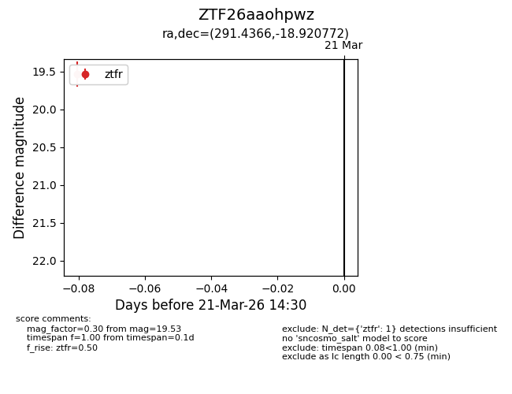
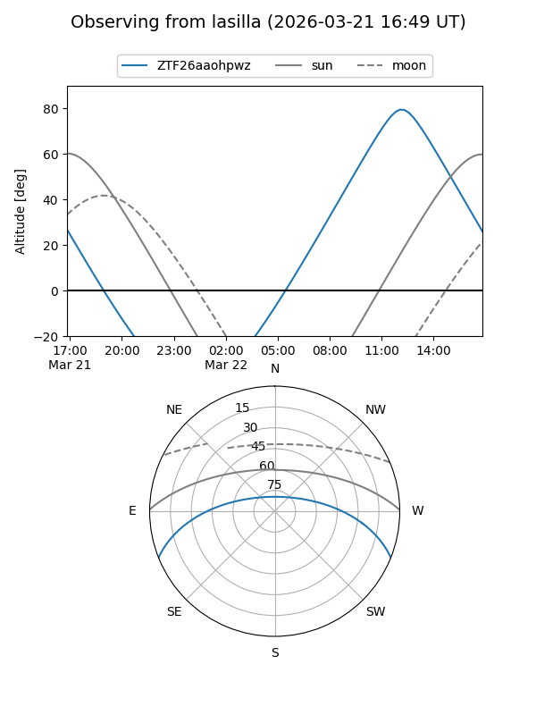
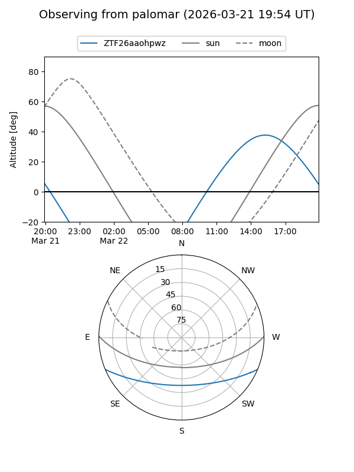

ZTF26aaohpwz
Target ZTF26aaohpwz at 2026-03-21 14:32
Aliases and brokers:
FINK: link
Lasair: link
ALeRCE: link
alt names
ZTF26aaohpwz (ztf,fink_ztf)
Coordinates:
equatorial (ra, dec) = 291.4366,-18.92077
equatorial (HMS+DMS) = 19:25:44.78,-18:55:14.78
galactic (l, b) = (19.4499,-15.86779)
Flags:
Photometry:
last ztfr=19.53
1 ztfr detections
Lightcurve

Visibility


Additional plots